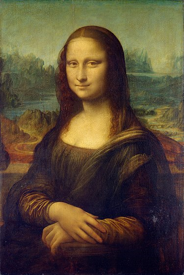

Мона Лиза
К источнику

История создания картины
Ещё первые итальянские биографы Леонардо да Винчи писали о месте, которое занимала эта картина в творчестве
художника. От работы над «Моной Лизой» Леонардо не уклонялся — как это было со многими другими заказами, а,
наоборот, отдавался ей с какой-то страстью. Ей было посвящено всё время, остававшееся у него от работы над «Битвой
при Ангиари»[2]. Он потратил на него значительное время и, покидая Италию в зрелом возрасте, увёз с собой во
Францию в числе некоторых других избранных картин. Да Винчи испытывал особенную привязанность к этому
портрету, а
также много размышлял во время процесса его создания, в «Трактате о живописи» и в тех заметках о технике живописи,
которые не вошли в него, можно найти множество указаний, с несомненностью относящихся к «Джоконде»[2].
Проблема идентификации модели
В 1550 году, 31 год спустя после смерти Леонардо да Винчи, Джорджо Вазари (1511—1574), автор
биографий итальянских
художников, писал, что Мона Лиза (сокращение от мадонна Лиза) была женой флорентийца по имени Франческо дель
Джокондо (итал. Francesco del Giocondo) и Леонардо, потратив на её портрет 4 года, всё же оставил его
неоконченным.
Вазари, родившийся в 1511 году, никак не мог увидеть Джоконду своими глазами и был вынужден
сослаться на
информацию, данную анонимным автором первой биографии Леонардо. Именно он и пишет о торговце шелками Франческо
Джокондо, заказавшем у художника портрет своей третьей жены. Несмотря на слова этого анонимного современника,
многие исследователи сомневались в возможности того, что «Мона Лиза» была написана во Флоренции (1500—1505), так
как утончённая техника может указывать на более позднее создание картины. Приводился также довод, что в это время
Леонардо был настолько занят работой над «Битвой при Ангиари», что даже отказал маркизе мантуанской Изабелле
д’Эсте принять её заказ (впрочем, с этой дамой его связывали очень сложные отношения).
- Катерина Сфорца, незаконная дочь миланского герцога Галеаццо Сфорца.
- Изабелла Арагонская, герцогиня Миланская.
- Чечилия Галлерани (модель другого портрета художника — «Дамы с горностаем»)
- Констанца д’Авалос, которая также имела прозвище «Весёлая», то есть La Gioconda по-итальянски. Вентури в 1925
году предположил, что «Джоконда» — портрет герцогини Костанцы д´Авалос, вдовы Федериго дель Бальцо, воспетой в
маленькой поэме Энео Ирпино, упоминающем и о её портрете, написанном Леонардо. Костанца была любовницей
Джулиано Медичи.